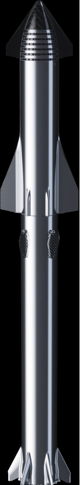

Top 4 nadchodzące rakiety kosmiczne
1.Starship

Najwyższa rakieta w historii, rakieta która ma zastąpić długodystansowe samoloty, rakieta która ma zabrać stu ludzi na Marsa, rakieta która przetransportuje 150 ton ładunku na Księżyc, rakieta, która będzie w 100% wielokrotnego użytku, rakieta o wręcz śmiesznie niskiej cenie za start, rakieta, która będzie tankować na orbicie, rakieta, która pozwoli na lo0ty turystyczne wokół Księżyca.
To brzmi jak science fiction
Lecz pierwsze testowe starty na orbitę Ziemi mają odbyć się jeszcze w tym roku. Za projekt i budowę rakiety odpowiedzialna jest firm SpaceX Elona Muska. Starship gdy posadzony na boosterze Super heavy będzie miał 120 metrów wysokości, zarówno booster jak i drugi stopień mają być łapane przez specjalną wieżę. Sam drugi stopień ma latać między miastami jak samolot i umożliwić podróż z jednego końca świata na drugi w około pół godziny. Booster ma być w wyposażony w 28 silników raptor (które ze względu na swoją budowę określane są świętym gralem techniki rakietowej), Drugi stopień będzie napędzany 6 silnikami raptor (3 do lotu w próżni 3 do lądowania). Sam w sobie starship z takim ładunkiem jaki ma przenosić ledwo wzbija się na orbitę lecz siłą tej rakiety ma być możliwość tankowania na orbicie, dzięki temu drugi stopień będzie miał na orbicie pełny bak co pozwoli na lot w wiele miejsc naszego układu słonecznego. drugi stopień ma wykonywać manewr "belly flop" poleganący na ustawieniu pojazdu od takim kątem by powietrze zpowolniło rakietę tak bardzo jak to tylko możliwe by jak najmniej paliwa było potrzebne na lądowanie. Rakieta będzie latać na kriogeniczny metan ponieważ ten pali się bardzo czysto co ułatwia wieloktrotną eksploatacje silników, a także może być łatwo wyprodukowany na Marsie w Procesie Sabatierra, produkcja paliwa na Marsie będzie kluczowa jeżeli wysłani przez SpaceX na Marsa ludzie będą chcieli wrócić jeszcze na ziemię,a rakiety będą miały być ponownie wykorzystane. Drugi stopień Starshipa będzie miał wiele wersji, w tym: Towarową, transportową(ziemia-ziemia), Księżycową, Marsjańską i Tankowcową. Pierwszy lot towarowego Starshipa na Marsa ma odbyć się podczas okna startowego w roku 2022 i dostarczyć materiały niezbędne do budowy kolonii, ludzie na Marsa mają polecieć w Roku 2024 podczas kolejnego okna startowego. Elon Musk ma nadzieje na stworzenie milionowego miasta na Marsie do roku 2050(co jest wizją niezbyt realną). Starship księżycowy jest także jednym z trzech fundowanych przez NASA projektów lądowników księżycowych.